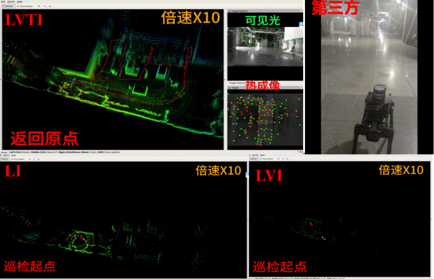
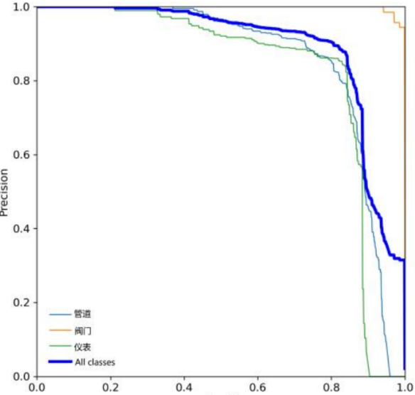
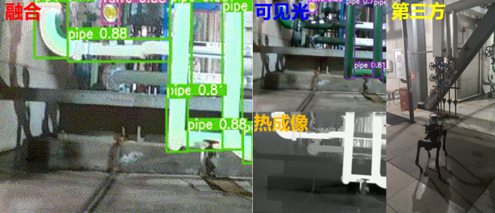

Cross-Modal Perception Platform for Quadruped Robot Power-Plant Inspection
1.Platform Construction
The platform uses the Unitree AlienGo quadruped robot as its mobile base; with strong locomotion control, it adapts to complex unstructured terrain such as uneven ground. For perception, we designed and built a compact, fully integrated cross-spectral perception module that contains the following sensors: an Optris Pi640 uncooled thermal-infrared camera for capturing all-weather thermal-radiation information; the visible-light module of an Intel RealSense D435i depth camera for acquiring texture and semantic information; an Xsens MTi-100 high-precision industrial-grade IMU for providing high-frequency motion priors; and a Velodyne VLP-16 LiDAR mounted on top of the platform for obtaining accurate environmental depth. All sensor data are processed centrally and in real time by an onboard Intel NUC mini-computer.
Because thermal and visible-light imaging rely on fundamentally different mechanisms, conventional calibration becomes ineffective. We therefore fabricated a custom calibration board with circular through-holes and an electric heating pad attached to its back. When the board is powered, it forms a clear bright-and-dark contrast pattern, allowing the joint extrinsic calibration of the cross-spectral multi-sensor suite to be completed with a cascaded strategy.

2.Dataset Construction
Existing mainstream datasets lack dedicated data for low-visibility, high-risk industrial environments. We selected the Chentang Thermal Power Plant in Tianjin, with a total area of about 20,000 m², as the data-collection site, covering scenes that range from narrow pipe rooms to open outdoor plant areas. The site is densely filled with metal pipes that make feature extraction difficult, exhibits an extremely dynamic range of illumination, and contains abundant thermal-radiation sources.
The collected dataset covers a typical operating cycle of robotic inspection and focuses on several challenging conditions, including low-light regions where the visible camera can hardly extract effective feature points, motion blur caused by body shaking, large-area overexposure caused by direct searchlight illumination, reduced thermal-image contrast caused by similar temperatures, and LiDAR geometric degeneracy induced by corridor environments. In addition, we carefully annotated key frames at the semantic level, labeling critical equipment such as valves, gauges, and pipes, so that the dataset can directly serve industrial semantic-segmentation and object-detection tasks.
3.Experimental Results
To comprehensively evaluate the system's robustness, we conducted a field comparison experiment along the inspection route at the thermal power plant. In the qualitative analysis, when entering a dim equipment room with reflective interference, the visible-light features decreased sharply, and our cross-spectral fusion system automatically raised the weight of the thermal modality, which captured stable thermal features and maintained continuous localization. During severe body shaking, the pre-integration constraints of the high-frequency IMU and the high-contrast thermal data together ensured the stability of front-end tracking. In an empty corridor, the visual texture information and the IMU effectively constrained the axial drift of the LiDAR.

In the quantitative evaluation of localization accuracy, after an inspection of several hundred meters, the LiDAR-inertial (LI) and LiDAR-visible-inertial (LVI) configurations exhibited origin drifts as large as 5.3 m and 8.7 m, respectively, whereas our proposed cross-spectral fusion (LVTI) limited the origin drift to within 0.2 m, achieving a near-perfect loop closure.
| Localization scheme | Origin drift over long-range inspection |
|---|---|
| LiDAR-inertial (LI) | 5.3 m |
| LiDAR-visible-inertial (LVI) | 8.7 m |
| Cross-spectral fusion (LVTI, ours) | < 0.2 m |


In the recognition evaluation, the cross-modal fusion algorithm markedly improved object-detection accuracy. After fusion, the overall mean average precision (mAP50) for pipes, gauges, and valves increased from 0.854 to 0.908. The high-precision localization and recognition described above ensure the safety of both the equipment and the robot during autonomous inspection lasting several hours.
← Back to Home